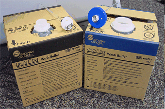

Specs - Wash Buffer and Container
Purpose
This document provides specifications for the Wash Buffer used in DxI.
Caution: Original Wash Buffer and Wash Buffer II (WBII) are chemically different and are not interchangeable. An APF ending in .2 and an assay recalibration are required to convert to WBII. Customers cannot convert back to the original Wash Buffer after converting to WBII.
WBII and Original Wash Buffer Specifications
| Parameter | Description |
|---|---|
| Packaging | Cubitainer - soft plastic bottle inside a cardboard container. |
| Volume | 10 Liter (2.5 Gallons) |
| Quantity of onboard containers | 2 |
| Weight of a full container | 20 Pounds |
| Live loading | Empty containers can be replaced during a run without affecting the system. |
Note:
- DxI original Wash Buffer is chemically the same as Access 2 original Wash Buffer.
- DxI WBII is chemically the same as Access 2 WBII.
- Although the Access and DxI containers are not interchangeable, wash buffer can be poured from the container of one instrument into the container of another, if the buffer is of the same type. Examples:
- Access WBII can be poured into a DxI WBII container.
- DxI WBII can be poured into an Access WBII container.
- Do not intermix original Wash Buffer with WBII.
